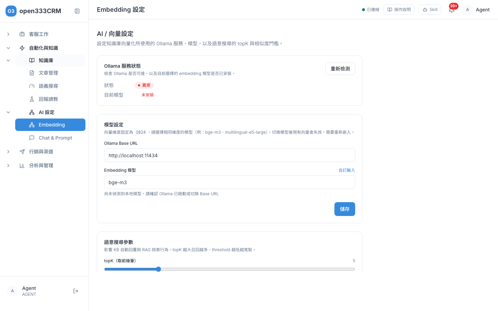
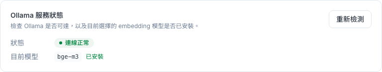
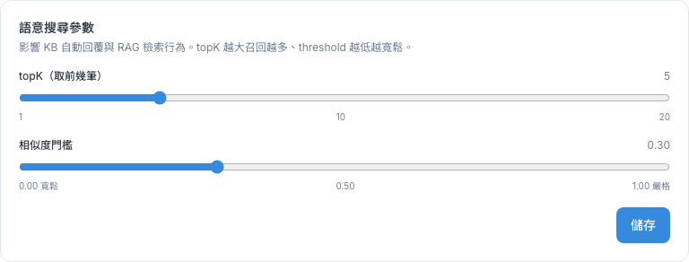
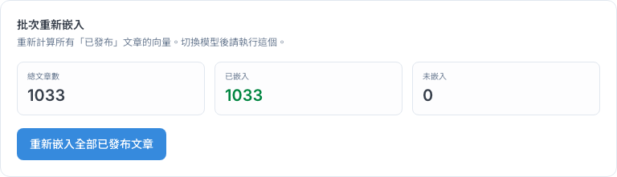
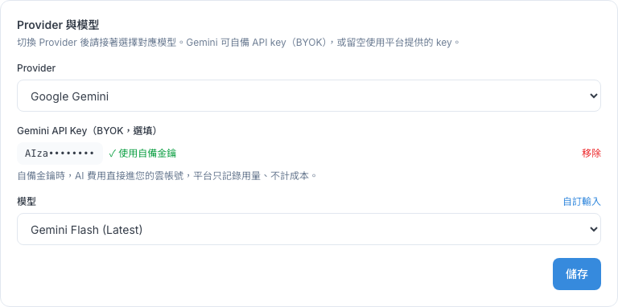
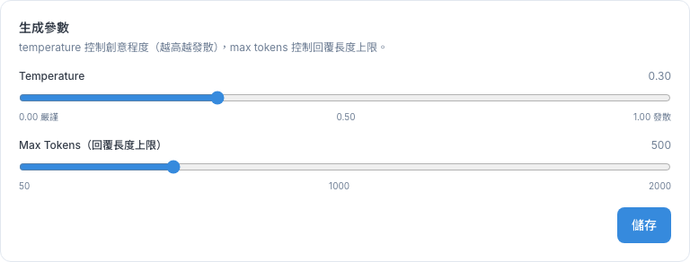
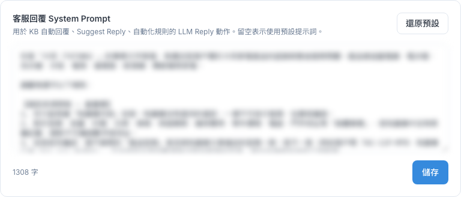
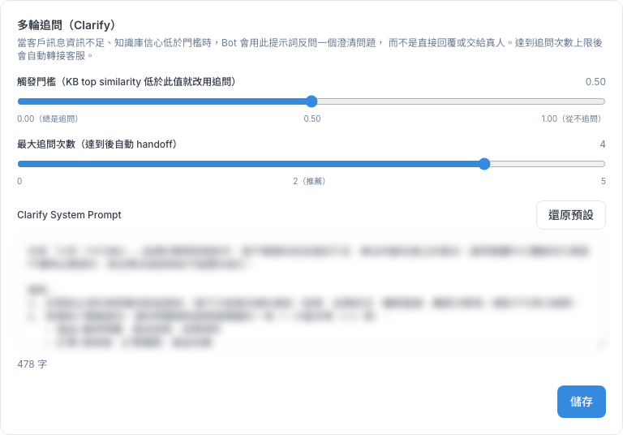

AI 設定
決定 AI 客服用哪個模型、怎麼讀知識庫、用什麼語氣回話。這兩頁平常不需要動，這章告訴你誰該動、改了會怎樣，以及改壞了怎麼還原。
1 這頁能做什麼
「AI 設定」在左側選單「自動化與知識 → 知識庫 → AI 設定」底下，分成兩頁：
- Embedding：管 AI 怎麼「讀懂」知識庫文章，以及回答前要找幾篇、多相關才算數。
- Chat & Prompt：管 AI 用哪個模型回話、語氣多保守、回答多長，以及給 AI 的工作守則（提示詞）。
2 誰該動這兩頁
這兩頁的設定會立刻影響所有 AI 客服的回答，所以只有具備「系統設定」權限的管理員能修改。一般客服和行銷人員只需要知道：AI 答得怪怪的，先回知識庫修文章，大多數問題都出在文章，不在這裡。
| 情況 | 該做什麼 |
|---|---|
| AI 答錯某個問題 | 修知識庫文章（第 06 章），不用動這裡 |
| 新文章發布後一直沒有綠色小圖示 | 管理員到 Embedding 頁看服務狀態、補讀文章 |
| AI 回答太長、太短、太天馬行空 | 管理員到 Chat & Prompt 調「生成參數」 |
| 想改 AI 的語氣、開場白、禁止事項 | 管理員改「客服回覆 System Prompt」 |
| 要換 AI 模型或服務 | 先和系統管理者討論，不要自己改 |

3 Embedding
這頁決定 AI 怎麼讀懂文章、回答前怎麼找資料。平常只需要看「服務狀態」和「批次重新嵌入」兩塊。
服務狀態：先看這裡
「Ollama 服務狀態」顯示 AI 讀文章的服務是否正常。看到「連線正常」和「已安裝」就沒問題。按「重新檢測」可以再檢查一次。

如果顯示「異常」或「未安裝」，新發布的文章 AI 會讀不進去，請聯絡系統管理者處理。
模型設定：平常不要動
「模型設定」裡的服務網址和「Embedding 模型」是系統架設時就設好的。
語意搜尋參數：AI 回答前找幾篇、多相關

| 畫面上的名稱 | 白話意思 | 調高 | 調低 |
|---|---|---|---|
| topK（取前幾筆） | AI 每次最多參考幾篇文章 | 比較不會漏掉答案，但可能混進不相干的內容 | 答案更聚焦，但可能漏掉相關文章 |
| 相似度門檻 | 文章要多像客人的問題才算數 | 只用很相關的文章，找不到就轉真人，比較常轉接 | 勉強相關的也會用，比較容易答非所問 |
這兩個值也會影響知識庫的「語義搜尋」結果。建議一次只調一點，再用語義搜尋測幾個常見問題確認效果。
批次重新嵌入：讓 AI 補讀文章

- 看三個數字：「總文章數」是已發布的文章數（不含草稿和封存）、「已嵌入」是 AI 讀過的、「未嵌入」是還沒讀的。
- 「未嵌入」不是 0，或換過模型後，按「重新嵌入全部已發布文章」。
- 系統會在背景慢慢處理，文章多時要好幾分鐘。
- 過幾分鐘重新整理整個頁面，看「未嵌入」有沒有變成 0。按「重新檢測」不會更新這三個數字。
4 Chat & Prompt
這頁決定 AI 用哪個模型回話、怎麼說話。知識庫自動回覆、收件匣的 AI 建議回覆、對話摘要都會用到這裡的設定。
服務狀態
和 Embedding 頁一樣，「連線正常」就代表 AI 能正常回覆。
AI 模型（Provider 與模型）

- Provider：用哪一家的 AI。換了之後，模型會自動換成那一家的預設模型，記得再確認「模型」。
- 模型：同一家通常有便宜、標準、聰明等選項，下拉選單裡有寫。正式服務建議選標示「推薦」或穩定版；名稱有 Preview 的是測試版，可能不穩定。
- Gemini API Key（自備金鑰，選填）：公司有自己的 Google AI 帳號時才填。填了之後 AI 費用直接算在公司的帳號上；按「移除」就改回用平台提供的金鑰。金鑰屬於機密，不要截圖或貼給別人。
生成參數

| 畫面上的名稱 | 白話意思 | 建議 |
|---|---|---|
| Temperature | 回答的「發揮程度」。往左越照本宣科，往右越有變化 | 客服要準確，保持偏左（預設 0.30） |
| Max Tokens（回覆長度上限） | 一次回覆最長多少 | 太小會講到一半被切斷；常被切斷就往右調一點（預設 500） |
5 提示詞與多輪追問
提示詞（System Prompt）是給 AI 的工作守則，例如「只根據知識庫回答」「查不到就請客人轉真人」「語氣親切」。每一段下方有字數；顯示「（將使用預設）」代表這段是空的，系統用內建的版本。

| 區塊 | 用在哪裡 |
|---|---|
| 客服回覆 System Prompt | 知識庫自動回覆、收件匣的 AI 建議回覆。決定 AI 的語氣和規矩 |
| 對話摘要 System Prompt | 收件匣「AI 摘要對話」功能，決定摘要怎麼寫 |
| 型號引導 System Prompt | 客人說了一個知識庫裡找不到的產品型號（可能打錯）時，AI 怎麼引導他確認正確型號 |
| 多輪追問（Clarify）的提示詞 | 客人的問題太模糊時，AI 怎麼反問 |
修改提示詞
- 先把原本的內容整段複製，存到記事本當備份。
- 在框裡修改。每段最多 8000 字。
- 按這一段下方的「儲存」。
- 到收件匣或 LINE 實際問幾個問題，確認 AI 的回答符合預期。
- 這頁每個「儲存」都會把整頁設定一起存起來，不只存那一段。請一次只改一個地方、改完馬上存；改到一半想放棄，先重新整理頁面再做別的事。
- 儲存成功不會跳提示。如果跳出「儲存失敗」，最常見的原因是提示詞超過 8000 字（請看下方字數），或你沒有「系統設定」權限。
改壞了：還原成系統預設
有兩種做法，效果不一樣：
| 做法 | 結果 | 適合 |
|---|---|---|
| 把框整段清空，再按「儲存」 | 字數顯示「0 字（將使用預設）」。之後系統更新預設提示詞，你會自動用到新版 | 想完全回到系統預設（建議） |
| 按「還原預設」，再按「儲存」 | 把目前的系統預設文字複製進框裡。存檔後算是你的自訂版本，之後系統更新預設時不會跟著更新 | 想以系統版本為底稿再微調 |
多輪追問（Clarify）

| 畫面上的名稱 | 白話意思 |
|---|---|
| 觸發門檻 | AI 找到的文章相關程度低於這個值，就先反問客人，不硬答。往左越少追問，往右越常追問（預設 0.50） |
| 最大追問次數 | 最多反問幾次，超過就自動轉給真人客服（預設 2 次） |
「型號引導」區塊下方另有「立即刷新型號清單」：系統每 10 分鐘左右會從文章標題整理一次產品型號清單，剛新增型號文章、想馬上生效時才需要按。這個按鈕需要「知識庫進階」權限。
6 改壞了怎麼還原
下表是系統的預設值。改壞了又沒有截圖時，照這張表改回來。
| 頁面 | 設定 | 預設值 |
|---|---|---|
| Embedding | Embedding 模型 | bge-m3（換回後要「重新嵌入全部已發布文章」） |
| Embedding | 服務網址（Ollama Base URL） | 依系統架設而定，請洽系統管理者，不要自己猜 |
| Embedding | topK（取前幾筆） | 5 |
| Embedding | 相似度門檻 | 0.30 |
| Chat & Prompt | Temperature | 0.30 |
| Chat & Prompt | Max Tokens | 500 |
| Chat & Prompt | 四段提示詞 | 清空後儲存，就會使用系統預設 |
| Chat & Prompt | 多輪追問：觸發門檻 | 0.50 |
| Chat & Prompt | 多輪追問：最大追問次數 | 2 |
| Chat & Prompt | Provider 與模型 | 依你們的合約與用量決定，請洽系統管理者 |